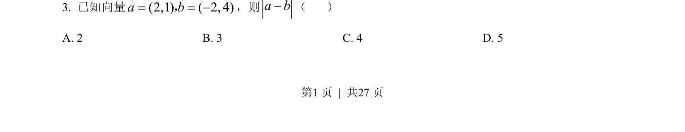
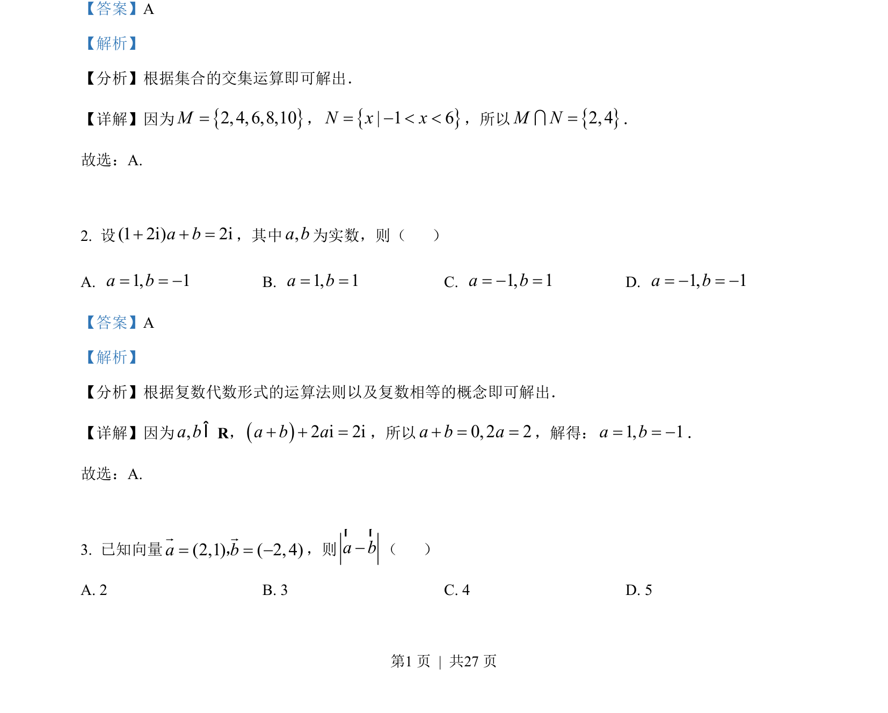

2022-文-03
考点：向量减法 向量的模
题面


摘要
本题考查平面向量的坐标减法运算及模长计算。
关联考点
答案与解析

📄 原 PDF 第 1 页：
素材/真题/吉林/2008-2024·（吉林）数学高考真题/2022年高考数学试卷（文）（全国乙卷）（解析卷）.pdf
题干文本
3．考试结束后，将本试卷和答题卡一并交回. 一、选择题：本题共12小题，每小题5分，共60分.在每小题给出的四个选项中，只有一项 是符合题目要求的. 1. 集合{}{}2, 4,6,8,10 , 1 6M N x x= = - < <，则M N=I（ ） A. {2, 4}B. {2,4,6}C. {2, 4,6,8}D. {2,4,6,8,10}
解析文本
【答案】A 【解析】 【分析】根据集合的交集运算即可解出． 【详解】因为{}2, 4,6,8,10M=，{}| 1 6N x x= - < <，所以{}2, 4M N=I． 故选：A. 2. 设(1 2i) 2ia b+ + =，其中,a b为实数，则（ ） A. 1, 1a b= = -B. 1, 1a b= =C. 1, 1a b= - =D. 1, 1a b= - = - 【答案】A 【解析】 【分析】根据复数代数形式的运算法则以及复数相等的概念即可解出． 【详解】因为,a bÎR，()2 i 2ia b a+ + =，所以0, 2 2a b a+ = =，解得：1, 1a b= = -． 故选：A. 3. 已知向量(2,1) ( 2, 4)a b= = -r r，，则a b-r r （ ） A. 2 B. 3 C. 4 D. 5